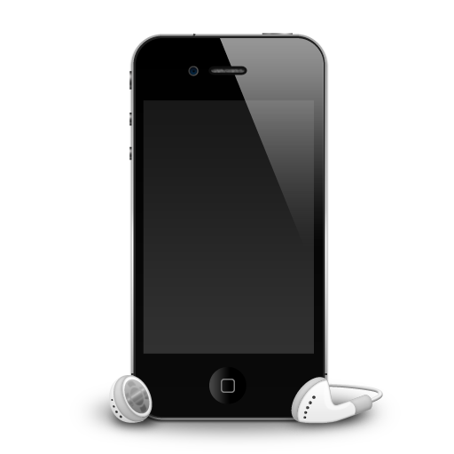

Specifications of Mi 4i (Black, 16 GB)
Technical Details
OS Android, Lollipop
RAM 2 GB
Item Weight 132 g
Product Dimensions 13.8 x 0.8 x 7 cm
Item model number MZB4299IN
Wireless communication technologies Bluetooth
Connectivity technologies GSM, (850/900/1800/1900 MHz), 3G, WCDMA, (850/900/1900/2100 MHz), 4G LTE, GPRS, EDGE, WiFi 802.11 a/b/g/n/ac
Special features Video Calls, Dual SIM, GPS, Music Player, Video Player, FM Radio, Gyroscope, Accelerometer, eCompass, Light sensor, Proximity sensor, E-mail
Form factor Touchscreen Phone
Weight 130 Grams
Colour White
Battery Power Rating 3120
Whats in the box Handset, Charger, USB Cable and User Guide
Price: Rs. 15,590.00